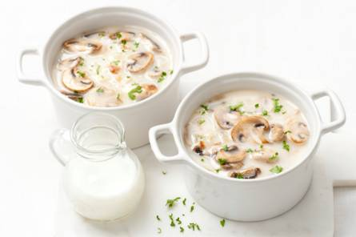

champignonssoep
Deze champignonssoep is perfect als voorgerecht.
Ingrediënten
- ½ middelgrote uit
- 125 gram champignons
- 25 gram ongezouten roomboter
- 12½ gram tarwebloem
- ½ liter kraanwater
- 1 kippenbouillontablet
- 1½ el crème fraîche
Bereidingswijze
- Snipper de ui. Veeg de champignons schoon met keukenpapier en snijd in plakjes.
- Verhit de boter in een pan met een dikke bodem en fruit de ui 3 min. op middelhoog vuur. Voeg de champignons toe en bak al omscheppend 5 min. mee. Voeg de bloem toe en bak 1 min. mee. Voeg het water toe en verkruimel de bouillontabletten erin. Breng het geheel aan de kook en laat 10 min. met de deksel op de pan op laag vuur koken.
- Voeg de crème fraîche toe, roer door met een garde en serveer.

CombinatieTip Lekker met fijngesneden selderij.